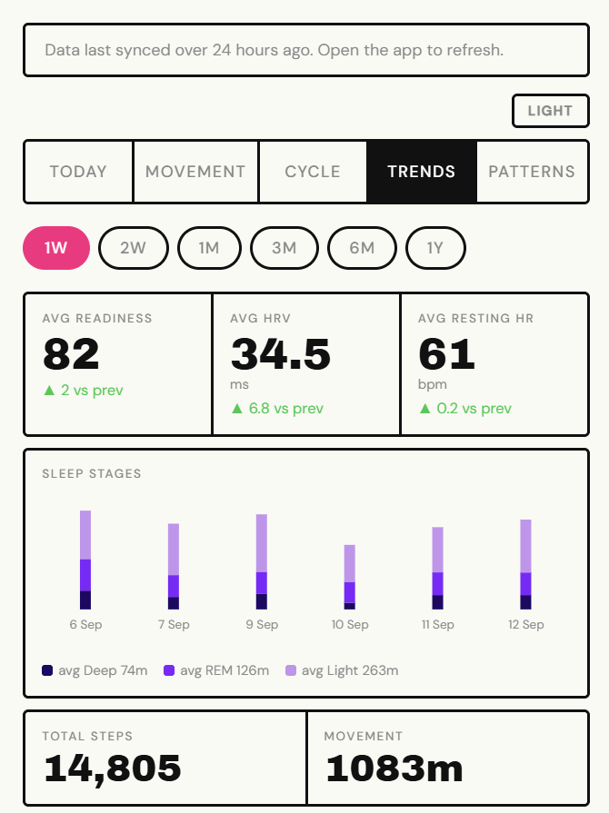
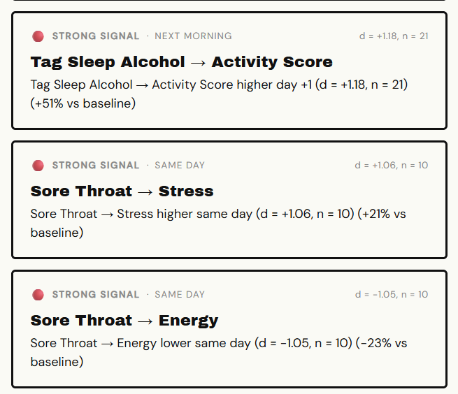

Oura Dashboard: more signal than a daily score
- Problem
- Oura's ring collects an enormous amount of physiological data (HRV, sleep stages, temperature, respiratory rate, SpO2, activity, tags) and reduces almost all of it to a single daily score. As a data person, that's backwards: the raw signal is rich enough to actually teach you something about your own body, and the stock app never gets past a grade.
- What I made
- A dashboard that pulls the same raw Oura data and does the analysis the official app doesn't: trends across weeks and months, statistical correlations between logged symptoms and the next day's metrics, and a plain-language summary of what actually moved, not just a number.
- Where it is
- Live, installed as a PWA on my phone, in daily personal use since May 2026.
The problem and the spec
Oura's own app treats a huge amount of physiological data as input to one number. Readiness, HRV, sleep stages, temperature, respiratory rate, SpO2, activity, tags, all of it collapses into a score and a ring. As someone who works in analytics for a living, that felt like the wrong tradeoff: the data is detailed enough to support real trend analysis and correlation, not just a daily grade. I also just didn't like using the app. It reads like a consumer wellness product, and I wanted something that felt like a tool I'd actually built for myself.
The hardest scoping call turned out to be deciding what "more insight" actually means, not just building more charts. The first version of the correlation grid used a same-day Pearson correlation on raw daily values, a weak baseline: a single bad night can skew it, and same-day pairing misses anything that only shows up the next morning. Real use made the gap obvious once there was enough data to check. The Patterns screen now reports an effect size and a sample size on every finding, not just a coefficient with no sense of how much data actually backs it.
| ID | Requirement | Priority |
|---|---|---|
| R1 | Surface trends and statistical correlations Oura's own app doesn't: multi-week averages, symptom-to-next-day effects, and weather correlation, not just a daily score | Must |
| R2 | Every correlation finding reports effect size and sample size, not just a coefficient, so a pattern backed by three days doesn't read the same as one backed by thirty | Must |
| R3 | Nutrition logging, workout tracking, social features, and multi-user support | Later |
Three of the decisions from the PRD and TDD. Both stay private; this is personal health data.
Design
The visual system is Neo-Bauhaus on purpose: a hard grid of ruled, black-bordered cells, heavy display type, no rounded corners, none of the soft consumer-wellness look Oura's own app has. Numbers are the largest thing on any screen, and nothing is styled to feel comforting instead of informative.
Correlation findings get their own visual treatment: a colored dot for signal strength, with the effect size and sample size printed right on the card in plain language, above the statistics rather than instead of them.


Left: the Trends tab, weekly averages against the prior period. Right: the Patterns screen, statistically scored correlations between logged symptoms and next-day metrics.
Technical design
A nightly GitHub Actions job pulls the last week of Oura data (overlapping to catch backfill) and upserts it into Supabase. A password-authenticated Vercel function is the only thing allowed to read that data or call the Oura and Claude APIs; the browser never holds a credential for either. A short daily narrative comes from Claude, built from the same computed metrics and baselines the rest of the app uses, not a separate pass over raw numbers.
Rolling JSON files, or a real database
| Option | Why it was attractive | Why I didn't stay with it |
|---|---|---|
| Ship v1 on rolling 90-day JSON files committed to the repo | Zero infrastructure, no database to manage, matches a fully free stack | Every new view wanted a different date range. Day navigation, week summaries, and 90-day trend charts each needed their own window, and a flat file can't be queried, only refetched whole |
| Migrate to Supabase, queried through an authenticated route, chosen | An arbitrary date range becomes a query, not a new file format; a new metric is a new column instead of new fetch logic | A real database now holds a service-role credential that must never reach the browser, and the nightly job upserts instead of just writing a file |
Stack: React (Vite), Tailwind CSS, Recharts, Vercel serverless functions, Supabase (Postgres), GitHub Actions, Anthropic Claude API, Oura API v2.
Building and launching
This is the one still actively growing. Where the other projects were two or three intense days, this one has run through more than a dozen build sessions since May 2026, each triggered by something that came up using it every morning. A coordinator plans each session against a technical design doc, hands work to a fresh agent per checkpoint, and updates a running handoff log, the same pattern as the other projects, just applied over months instead of days.
The best bug took weeks to even notice. The daily narrative, the one sentence at the top of the app meant to say something useful about today, had never actually saved once since it was built. The save call was silently failing every time: the database table used a column called generated_at, but every save attempt was writing to updated_at, a column that didn't exist. Nothing crashed and nothing logged an error a person would see; the narrative just quietly never persisted. It took an explicit schema query to catch it. Afterward, I audited every other write path in the pipeline for the same class of mistake, on the theory that if one silent failure went unnoticed for weeks, there was no reason to assume it was the only one.
Looking back
The Trends tab is the densest screen in the app, and my first instinct was to trim it down for mobile. I didn't, on purpose: it's the part I actually open the app for, the raw signal turned into something I can act on, and cutting content to make the screen look calmer would have traded away the one thing I built this for. The right fix is better grouping and collapsible sections, not less data, and that's still on the list.